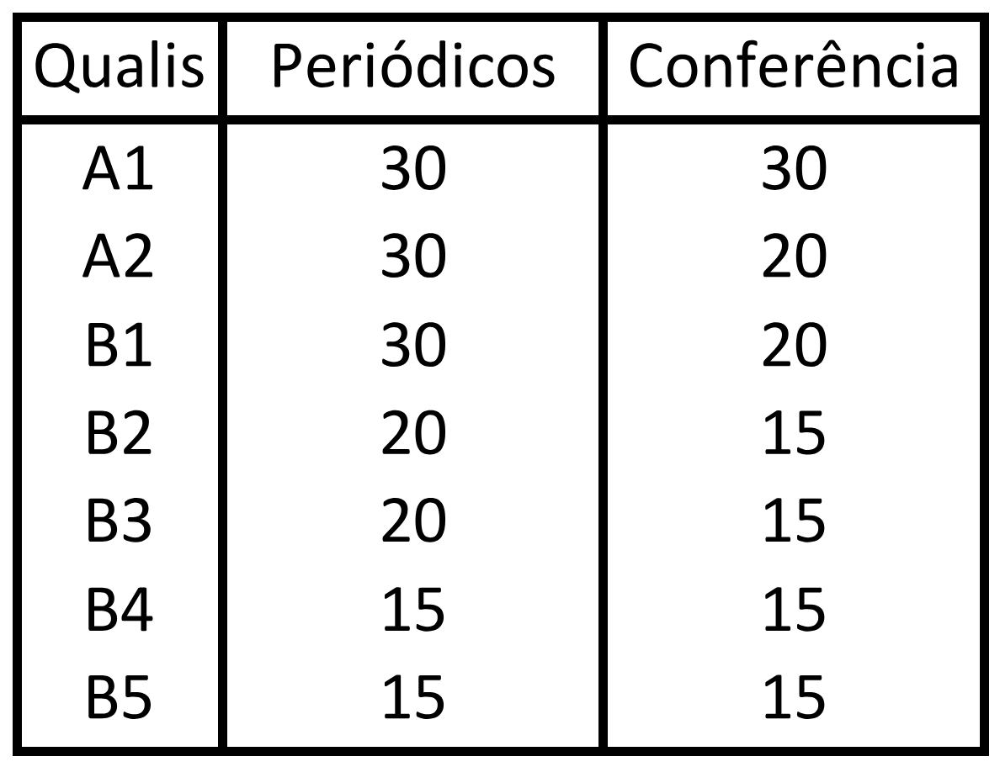

Entenda como fazer a inclusão de atividades complementares no vídeo abaixo!
Profissionais
40 pontos
Realização de estágios extracurriculares na área de Computação, com ou sem remuneração, devidamente comprovados por documentação emitida pelo local de estágio. A documentação deverá conter: identificação da supervisão local, atividades desenvolvidas, carga horária semanal, carga horária total cumprida, assinatura do supervisor na empresa, avaliação do estudante e autoavaliação do estudante acerca do aproveitamento no estágio.
A cada 6 (seis) meses de realização de estágio com, no mínimo 20 (vinte) horas semanais, serão atribuídos 15 (quinze) pontos.
Realização de atividades de aceleração/incubação de startup. A documentação deverá ser emitida pelo órgão responsável pela aceleração/incubação e deverá conter: identificação da supervisão local, atividades desenvolvidas, carga horária semanal, carga horária total cumprida e assinatura do supervisor do órgão.
A cada 6 (seis) meses de realização de atividades de aceleração/incubação com, no mínimo 20 (vinte) horas semanais, serão atribuídos 15 (quinze) pontos.
Realização de atividades profissionais na área de Computação, com remuneração, devidamente comprovados por documentação legal (CTPS ou contrato PJ) e declaração do superior ou contratante do serviço acerca das atividades desempenhadas e da carga horária semanal, com a seguinte pontuação.
A cada 6 (seis) meses de realização de atividade profissional remunerada com, no mínimo 20 (vinte) horas semanais, serão atribuídos 15 (quinze) pontos.
A cada 6 (seis) meses de realização de atividade profissional remunerada com carga horária de no mínimo 40 (quarenta) horas semanais, serão atribuídos 30 (trinta) pontos.
Pesquisa Científica
35 pontos
Participação como bolsista em Programa de Pesquisa Científica (PIBIC ou similar) ou Pesquisa Científica Voluntária (ICV), tendo concluído o Projeto e apresentado no SEMIC, corresponderá a 15 (quinze) pontos.
Participação em Projetos de Pesquisa, como colaborador nos Grupos de Pesquisa relacionados à área de Computação, com entrega de relatório ao professor orientador, desde que o tempo mínimo de participação seja de 6 (seis) meses e o relatório seja aprovado pelo coordenador do projeto, corresponderá a 10 (dez) pontos.
Participação em Evento Científico como Ouvinte, desde que a carga horária total do evento seja de no mínimo 16 (dezesseis) horas e o aluno obtenha pelo menos 75% (setenta e cinco por cento) de frequência, corresponderá a 5 (cinco) pontos.
Organização de Eventos Acadêmicos e Científicos na Universidade, desde que apresentado e aprovado previamente pela Coordenação de Curso, corresponderá a 5 (cinco) pontos.
Apresentação de trabalho em Evento Científico (exceto SEMIC), sob a forma de Pôster ou Resumo, corresponderá a 5 (cinco) pontos.
Publicação de artigo científico completo, em conferência ou periódico, será atribuída pontuação conforme a Tabela 1.

Culturais
15 pontos
Participação como instrumentista na Orquestra Experimental da PUCPR, durante 1 (um) ano, mediante declaração da Diretoria de Cultura e Esporte, corresponderá a 10 (dez) pontos.
Participação como ator no Grupo de teatro Tanahora, durante 1 (um) ano, mediante declaração da Diretoria de Cultura e Esporte, corresponderá a 10 (dez) pontos.
Participação como vocal no Coral Marcelino Champagnat, durante 1 (um) ano, mediante declaração da Diretoria de Cultura e Esporte, corresponderá a 10 (dez) pontos.
Participação como finalista do Revele Seu Talento, mediante declaração da Diretoria de Cultura e Esporte, corresponderá a 5 (cinco) pontos.
Esportivas
15 pontos
Participação como atleta da PUCPR representando a Instituição nos Jogos Universitários do Paraná (JUPS), mediante declaração da Diretoria de Cultura e Esporte, corresponderá a 10 (dez) pontos.
Participação como atleta da PUCPR representando a Instituição nos Jogos Universitários Brasileiros (JUBS), mediante declaração da Diretoria de Cultura e Esporte, corresponderá a 10 (dez) pontos.
Participação como atleta em time competindo nos Jogos Internos da PUCPR (JIP), mediante declaração da Diretoria de Cultura e Esporte, corresponderá a 10 (dez) pontos.
Caso seja finalista em uma das três modalidades anteriores, receberá 5 (cinco) pontos adicionais.
Acadêmicas
30 pontos
Participação em semana acadêmica da Computação, realizada na PUCPR ou em outras Instituições de Ensino Superior, com frequência mínima de 75% (setenta e cinco por cento), corresponderá a 5 (cinco) pontos para cada ano de participação.
Participação no stand do curso no Planeta PUCPR (Feira de Cursos), devidamente comprovadas por declaração do Coordenação do Curso, corresponderá a 5 (cinco) pontos para cada turno de 8 (oito) horas de participação.
Participação em Evento Acadêmico (por exemplo Hackathons, Global Game Jam etc.) como participante, desde que a carga horária total do evento seja de no mínimo 8 (oito) horas e o aluno obtenha pelo menos 75% (setenta e cinco por cento) de frequência, corresponderá a 5 (cinco) ponto.
Participação em Curso de Extensão, na PUCPR ou em outra Instituição de Ensino Superior, voltado diretamente para a área de Computação ou áreas afins, devidamente comprovada com certificado e com o mínimo de 75% (setenta e cinco por cento) de frequência, corresponderá a 5 (cinco) pontos a cada 20 (vinte) horas de curso.
Apresentação de palestra, sem que esta esteja prevista em projeto de estágio ou em outras atividades regulares do curso, desde que devidamente comprovada e voltada diretamente para a área de Computação ou áreas afins, corresponderá a 5 (cinco) pontos.
Participação como Monitor em Projeto de Monitoria aprovado pela PUCPR, corresponderá a 1 (um) ponto para cada 1 (uma) hora semanal por 1 (um) semestre acadêmico.
Participação com aprovação em disciplinas ofertadas pelo Programa de Pós-Graduação em Informática Aplicada (PPGIa) ou Programa de Pós-Graduação em Tecnologia e Saúde (PPGTS), 10 (dez) pontos por disciplina cursada.
Ação Social
20 pontos
Participação em projetos de caráter social, exceto os já previstos na matriz curricular, com entrega de relatório das atividades desenvolvidas e com declaração emitida pela Coordenação do Projeto, corresponderá a 10 (dez) pontos por projeto concluído.
Participação na Clínica de TIC, em carga horária adicional à prevista na Matriz Curricular, com declaração da Coordenação de Curso, corresponderá a 5 (cinco) pontos a cada 30 horas.
Internacionalização
25 pontos
Participação em Programa de Intercâmbio de Graduação com Aproveitamento de 75% dos créditos definidos em reunião com a Coordenação do Curso, corresponderá a 20 (vinte) pontos a cada semestre letivo.
Participação em Programa de Intercâmbio de curso de Idiomas, mediante comprovação de matrícula em instituição de ensino de línguas, corresponderá a 5 (cinco) pontos a cada 30 (trinta) horas efetivas de curso realizadas em no país estrangeiro ofertante.
Participação em Curso de Extensão internacional, ministrado em língua estrangeira, na modalidade MOOC (Massive Open Online Course), voltado diretamente para a área de Computação ou áreas afins, desde que não esteja dentro do programa das disciplinas, devidamente comprovada com certificado, corresponderá a 5 (cinco) pontos a cada 20 (vinte) horas de curso.
Participação em disciplina do English Semester, cursada na PUCPR, na qual tenha sido aprovado, corresponderá a 5 (cinco) pontos por disciplina.